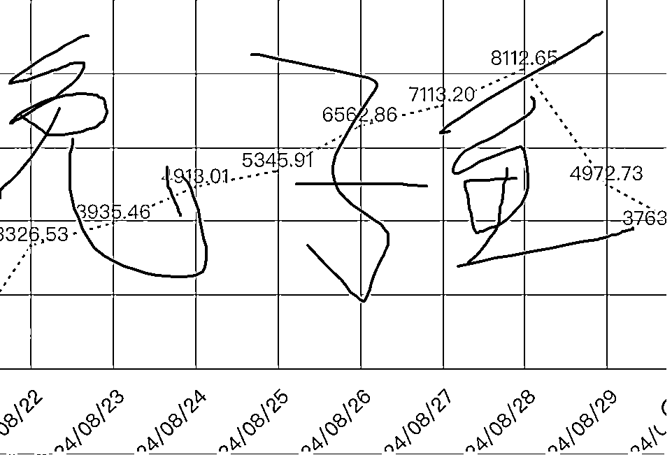
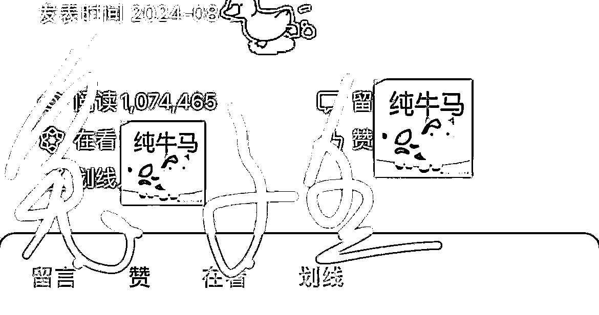
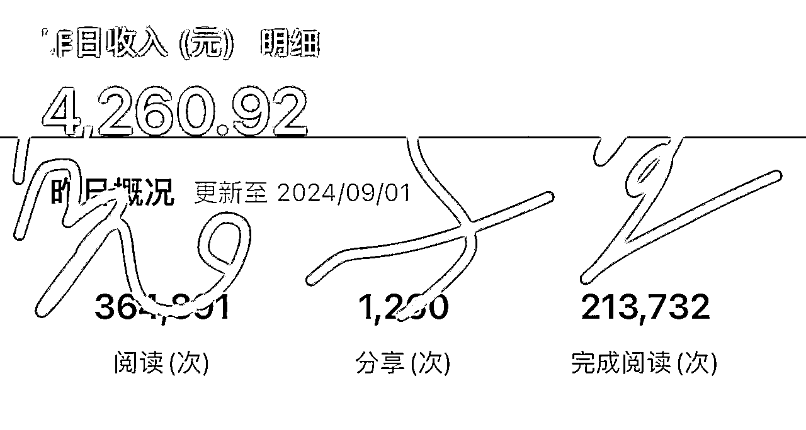
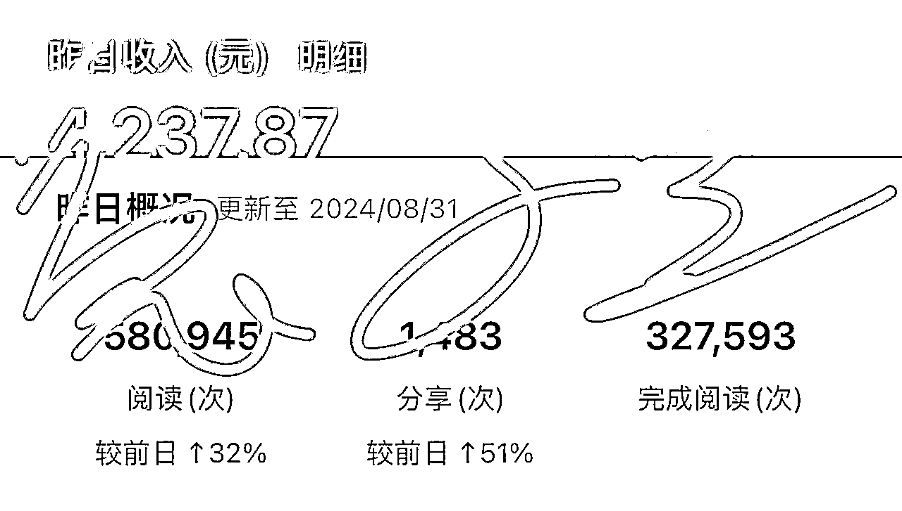
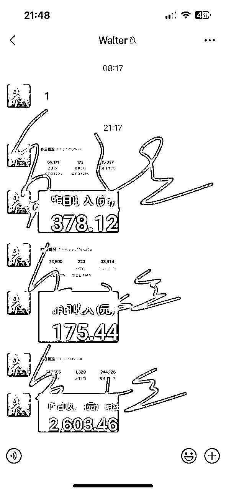
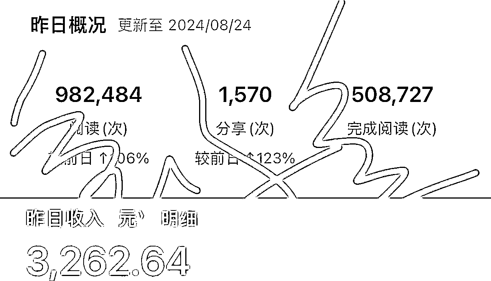
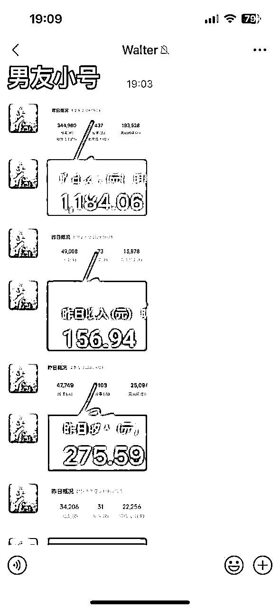
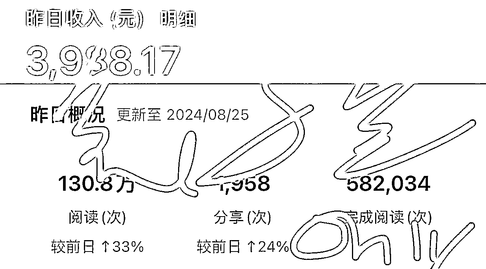
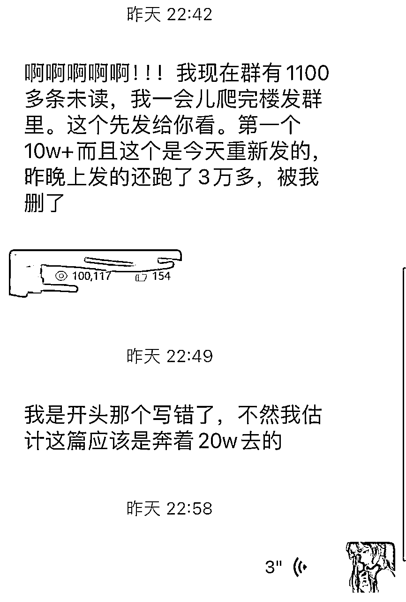
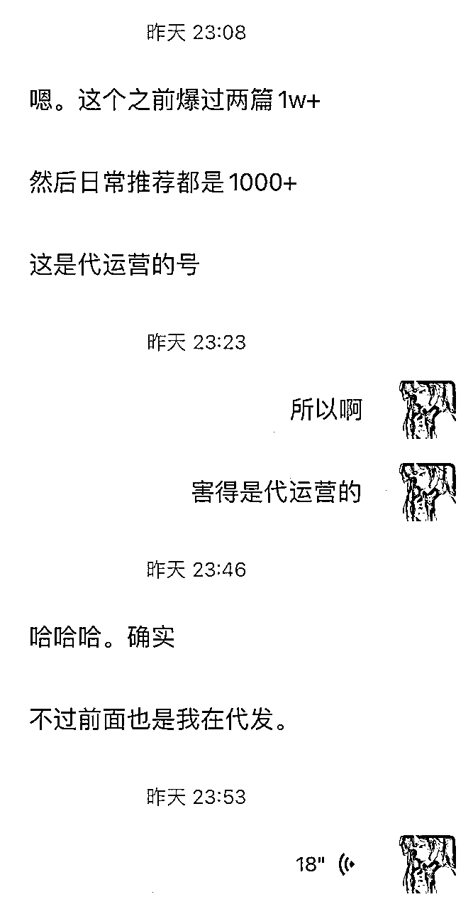

来源：https://xcozwbpl16.feishu.cn/docx/Xp6DdCG1Cowo6UxoWZFcxD7gnFN
大家好，我是玩了5年写作平台的兔子鱼，21年因为公众号没做批量后悔莫及，24年就没放弃这一波，希望大家有机会也赶上热乎的，特来给大家一些我的玩法方式和经验分享，8月目前每日有3-8k收益，助力公众号自动化航海，提供批量思路（文是8月底写的，发的时候补了一些新数据）




①每日收益是多方分成，并不是我一个人的独享，可以理解为gmv，纯利过千是有，3-8k的图里收益的结算账号登记大概是200-350个号慢慢加号的（都是手动登记的不准确，供参考）
②并没有想在生财招募，我本身也有自己的招募团队，希望大家通过本次ai自动化相关的航海学会0-1，再1-100自己招募放大
③本帖提到的玩法前提是基于ai批量自动化无压力、文章产能跟得上的情况下，若不了解公众号以及未跑通自动化的圈友也可以跟着9月的航海先开始打基础




既然出现问题，那我们就设法避免和解决问题，我开始思考不需要考虑ip的模式，这里感谢招募玩法“先驱”@猫哥提供的诸多思路，也让我得以踩在巨人的肩膀上思考与完善
代运营模式可以理解为，我给a文章，a拿到文章后直接去发，收益我们再来分成的模式，省了自己的时间，也不用考虑ip问题（下图为同样在尝试代运营的圈友昨日的报喜）


这里就要看你所招募到的群体是否对互联网赚钱熟悉，偏网赚圈的话一般采取37分或者46分（注意我们是高的那一方），28和19的话其实全托管借号的模式会比较多
公众号其实是个相对投入成本比较少，但是博运气回报率可能又非常大的项目，相对来说宝妈圈和网创圈的参与度和兴趣会比较大，话术参考：学生、宝妈、自由职业、打工人易上手，一部手机/电脑，投入几十块，每天空余3-5分钟，实现月入0-10000（确实也没夸大的意思，只是可能号给的多就不止3-5分钟）
把话术做成海报发朋友圈更为方便
个人可以直接在朋友圈经常写写自己做公众号的经验和感受，晒晒收益，让朋友圈的人了解到你在做什么，铺垫之后再开始招募，因为个人身边基本朋友为主，所以建议可以46分成，慢慢的收益有更多的可以再晒一下和朋友a朋友b的对话，会有人慢慢找你，这时候可以建议对方先尝试一个号，后期有回报了或者是感到焦虑了再加到3个号到5个号（基本不考虑ip影响），要提前先和对方说要投入一个流量主的成本（40-80元一个号）
若是本身就自己有宝妈圈网创圈的可能性就更多了，招募模式也看是拉人头先给钱还是玩分成，号的正反馈会比个人来的更快一些
如果真的是好的穿一条裤子的朋友可以不签合同，若是网络上没那么熟悉的，我建议大家可以收一个押金以及签合同保障一下权益，以防赚了跑路亦或是三天打鱼两天晒网，押金可以看自己，199-399都可以，亦或是一个号100
(因为之前有小伙伴发了类似合同被投诉了所以我这里就大概说一下内容)
公众号项目只要平台没倒其实一直有适合的方式去玩，他的优势就是相对投入成本真的很低，非常适合0基础开始上手学习和进阶
招募玩法一定程度相当于是进阶玩法了，希望有公众号基础的小伙伴感兴趣的也可以尝试一下，看着100个号很多肯定很难到手，但你这样算，每个人想多赚钱就自己多找号，每个人给5个来尝试，那也就是需要20个人而已
我身边还在哺乳期的一位网友，闲不住想做点什么简单活，每天发发文章，运气好也爆了一篇，看到收入有160块特别高兴也做得很积极，我也觉得有帮助到他们
如果你还坚持在做公众号但是苦于号少，招募代运营是个双赢的模式，期待大家的实践反馈